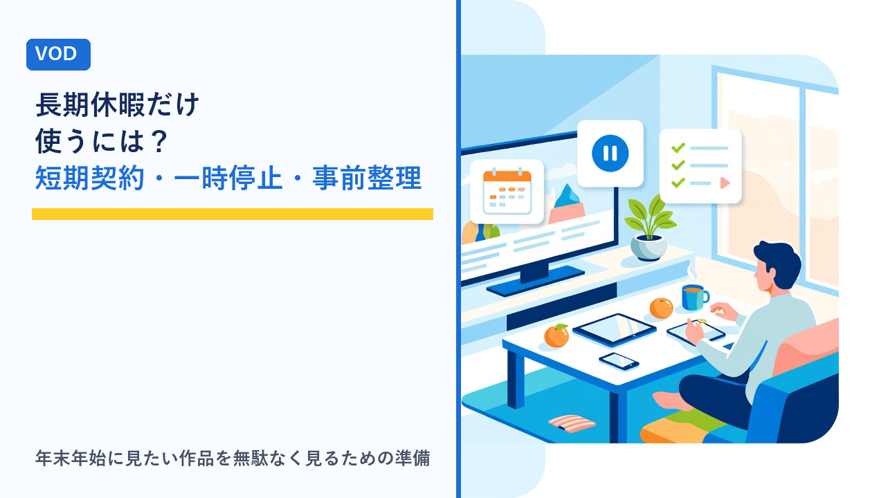

VODの年末年始・長期休暇の使い方：短期契約・一時停止・見たい作品の事前整理の考え方
更新日：2026-11-09

年末年始やお盆、ゴールデンウィークのような長期休暇は、動画配信サービス（VOD）をふだんよりまとめて使う時期です。一方で、休暇が終わると見る時間が減り、「休みの間だけ使いたかったのに、そのまま月額が続いている」ということも起こりやすくなります。この記事では、長期休暇に合わせてVODを使うときに知っておきたい、休暇の期間だけ使う方法の違い、請求日の数え方、見たい作品の事前整理、帰省先や旅行先で見る準備を客観的に整理します。
長期休暇にVODの使い方が変わる理由
長期休暇中は、ふだんの平日と比べて次のような変化が起きます。使い方の変化を先に把握しておくと、契約の仕方や準備の内容が決めやすくなります。
- まとまった時間ができる：1シーズンを通して見る、シリーズ作品を最初から見直すといった、平日には難しい見方ができます。
- 見る場所と端末が変わる：帰省先や旅行先では、自宅のテレビや回線が使えず、スマホ・タブレット・実家のテレビで見ることになります。
- 一緒に見る人が増える：家族や親戚と同じ画面で見る、別々の部屋で同時に見るといった場面が増え、同時視聴の台数やプロフィール分けが問題になります。
- 期間限定の配信が増える：年末年始は特番やシリーズの一挙配信、カウントダウンや年始のスポーツ中継など、その時期にしか見られない配信が組まれやすい時期です。
- 休暇が終わると見る時間が急に減る：契約を続けるかどうかの判断を、休暇の終わりに合わせて決めておく必要があります。
休暇の期間だけ使う3つの方法
「休みの間だけ使いたい」という目的に対しては、大きく3つの方法があります。それぞれ向いている状況と注意点が異なります。
| 方法 | 仕組み | 向いている状況 | 注意点 |
|---|---|---|---|
| 1か月だけ契約して解約する | 休暇の直前に月額契約を始め、次の請求日が来る前に解約する | 以前に無料体験を使い終えたサービス、確実に見たい作品があるサービス | 請求日の数え方を確認する。解約後も期間末まで見られるかはサービス次第 |
| 一時停止（休止）機能を使う | 契約を残したまま、一定期間だけ請求と視聴を止める | すでに契約中で、休暇後にまた使う予定があるサービス | 機能の有無はサービスによる。停止できる期間や回数に上限がある場合がある |
| 無料体験を休暇に合わせる | 体験開始日を休暇の初日付近に合わせ、期間内に見て判断する | まだ一度も使ったことがないサービス | 体験は一人一回が原則。年末年始はキャンペーンで条件が変わることもある |
無料体験の有無や日数は動画配信サービスの無料体験まとめ比較で、再登録時に体験が使えるかどうかの考え方は再登録・再体験のルールで整理しています。
「一時停止」機能はどのサービスにもあるわけではない
一時停止（休止・サブスクリプションの一時停止）は、契約を解約せずに請求を止める機能です。あるサービスでは次のような形で提供されています。
- 停止できる期間：1か月単位で最長数か月までというように、上限が決まっていることが一般的です。停止期間が終わると自動で再開され、請求も再び始まります。
- 停止中にできること：視聴はできなくなるのが普通ですが、マイリストや視聴履歴、プロフィールは残ります。解約と違い、再開時に設定をやり直す必要がありません。
- 停止の申し込み方：アカウント設定の「プラン管理」「請求」などから行います。アプリストア経由や携帯キャリア経由で契約した場合は、機能が使えないか、別の手順になることがあります。
一方で、一時停止機能を提供していないサービスも多く、その場合の代替は「解約して、使いたいときに再登録する」になります。再登録のときに気をつけたいのは、マイリストや履歴が消えるかどうか、同じ料金プランで戻れるか、過去に利用していると無料体験の対象外になることです。自分が使っているサービスに一時停止があるかどうかは、ヘルプで「一時停止」「休止」「停止」といった語で探すと確認できます。
請求日の数え方と「1か月だけ」の落とし穴
短期で契約する場合、思ったより早く2回目の請求が来てしまうことがあります。請求の起算の仕方がサービスで異なるためです。
| 請求の起算方式 | 仕組み | 休暇前に登録するときの注意 |
|---|---|---|
| 登録日起算 | 登録した日から1か月後が次の請求日。例：12月27日登録なら次回は1月27日 | 休暇の初日に近い日に登録すれば、ほぼ1か月まるごと使える |
| 月末締め（暦月） | 月の途中で登録しても、月末までが1回分。翌月1日に次の請求 | 12月下旬の登録だと数日で2回目の請求が来る。初月が日割りかどうかも確認 |
| 無料体験後に初回請求 | 体験終了日の翌日から有料期間が始まり、そこから1か月単位 | 体験終了日と休暇の終わりの位置関係を見て、解約する日を決める |
あわせて、次の点も確認しておくと行き違いが減ります。
- 解約後にいつまで見られるか：期間末まで見られるサービスなら、休暇の途中で解約手続きを済ませておいても損になりません。解約時点で見られなくなるサービスなら、見終えてから手続きします。
- 年末年始のサポート体制：問い合わせ窓口が休業していたり、返答に時間がかかったりすることがあります。解約や請求の疑問は休暇に入る前に調べておくと安心です。
- 決済経路による違い：アプリストア経由や携帯キャリア経由で契約すると、請求日の数え方や解約の場所が公式サイトからの契約と異なります。登録した経路を控えておきます。
解約の具体的な手順や忘れを防ぐ方法はVODサービスの解約忘れを防ぐコツと注意点まとめで、年払い・キャリア決済・ポイント還元まで含めた料金の比べ方はVODの月額料金を年間で比べるで整理しています。
見たい作品を休暇前に整理する方法
長期休暇は時間があるようでいて、実際には帰省や来客、外出で視聴に使える時間は限られます。「見たいものをなんとなく探しているうちに休みが終わった」とならないよう、休暇に入る前に作品を整理しておく方法を表にまとめます。
| 整理の観点 | 確認の方法 | 整理のしかた |
|---|---|---|
| 見放題か別料金か | 作品ページの「見放題」「レンタル」「購入」の表記 | 別料金の作品は本数と金額を先に合計しておく。見放題の作品を優先して並べる |
| 配信終了日 | 作品ページやマイリストの「配信終了」表示 | 休暇中に終了する作品を先頭に。終了日が近い順に見る |
| 一挙配信・特番 | サービスの特集ページ、年末年始の編成案内 | 配信期間が短いものはカレンダーに入れる。リアルタイム配信は時刻も控える |
| 所要時間 | 話数×1話の長さ。例：全12話×約24分なら約5時間 | 休暇中に見られる時間を見積もり、入りきる本数に絞る |
| 誰と見るか | 家族と見る作品、一人で見る作品を分ける | 家族と見る作品は一緒にいる日に、一人で見る作品は移動中や早朝・深夜に回す |
| どのサービスにあるか | 複数契約している場合、作品ごとに配信元を確認 | 同じ作品が複数にあるなら、画質やダウンロードの条件が合うほうで見る |
見放題・レンタル・購入の違いと料金が変わる理由はVODの「見放題」と「レンタル」「購入」の違いで詳しく整理しています。複数のサービスを契約していて作品が重なる場合は、複数のVODを契約しているときの整理術も参考になります。年末年始のスポーツ中継を目的にする場合は、競技ごとの配信サービスの違いをスポーツ中継が見られるVOD・配信サービスの比較で確認できます。
帰省先・旅行先で見るときの準備
自宅以外の場所で見る場合、ふだんと環境が変わる分だけ事前の準備が必要になります。出発前に確認しておきたい項目を整理します。
- ダウンロードしておく：移動中や通信環境が不安定な場所で見るなら、出発前に自宅のWi-Fiで作品を端末に保存しておきます。保存できる作品・本数・保存期限には上限があり、視聴期限が「再生開始から48時間」のように決まっている場合もあります。ダウンロード機能の違いはVODの画質・ダウンロード機能を比較をご覧ください。
- 実家のテレビで見られるか：テレビの機種やストリーミング端末の有無で、アプリが使えるかどうかが変わります。持ち運べるストリーミング端末を持参する、スマホから画面を映す、HDMIでパソコンをつなぐなどの方法があります。方法ごとの違いはテレビでVODを見る方法まとめで整理しています。
- 同時視聴の台数：自宅に残る家族と帰省先の自分が同時に見ると、プランの同時視聴数を超えて再生できないことがあります。台数の考え方は家族アカウント・同時視聴ルールまとめを参照してください。
- モバイル回線の通信量：帰省先にWi-Fiがない場合、スマホ回線で見ると通信量が大きくなります。画質設定を下げる、ダウンロード済みの作品を優先するなどの考え方はVODの通信量はどれくらい？で整理しています。
- ログイン情報を手元に：実家のテレビや別の端末でログインするとき、パスワードや認証コードの受け取り方法が必要になります。登録したメールアドレスとログイン方法を控えておきます。
休暇が終わったあとの見直し
長期休暇が終わると見る時間は平日のペースに戻ります。休暇の最後の数日で、次の点を決めておくと契約が惰性で続くのを防げます。
| 状況 | 取りやすい対応 | 確認しておくこと |
|---|---|---|
| 休暇中に見たいものは見終えた | 次の請求日の前に解約する | 解約後に見られる期間、マイリストや履歴が残るか、再登録の条件 |
| 見終えていないが平日は時間がない | 一時停止機能があれば停止、なければ翌月の請求日前に再判断 | 停止できる期間の上限、停止中に配信終了する作品がないか |
| ふだんから見る習慣がつきそう | 継続する。年払いなど料金の安いプランがあるか見る | 年払いは途中解約の返金条件、プラン変更の反映タイミング |
| 複数契約して重なりが出た | 作品の重なりが多いサービスを整理する | それぞれの請求日、独占配信の作品がどちらにあるか |
無料体験から本契約に移ったサービスの場合、体験の終了日と最初の請求日は別の日であることが多く、終了日の直前に判断する必要があります。体験期間中に確認しておきたい項目はVODの無料体験中にやっておきたいチェックリストで整理しています。
選び方のポイント
- 「休みの間だけ」なら請求の起算方式を先に見る：登録日起算か月末締めかで、同じ「1か月」でも使える日数が大きく変わります。月末締めのサービスに12月下旬に登録するのは不利になりやすい点です。
- 継続中のサービスは一時停止の有無を確認する：機能があれば、解約と再登録の手間やマイリストの消失を避けられます。なければ「解約→再登録」の条件を見ておきます。
- 見たい作品は「配信終了日」「見放題か別料金か」「所要時間」で並べる：この3つで並べると、休暇中に見られる本数が現実的に見えてきます。
- 帰省・旅行があるならダウンロードと端末の確認を出発前に：出先で初めて試すと、アプリが入らない、保存上限に達しているなどのつまずきが起きやすくなります。
- 解約や問い合わせは休暇に入る前に調べる：年末年始はサポート窓口が休業する場合があり、請求日直前の疑問に間に合わないことがあります。
- 休暇の終わりに「続ける・止める・停止する」を決める日を作る：次の請求日の2〜3日前をカレンダーに入れておくと、惰性で続く契約を減らせます。
よくある質問
年末年始の休みに合わせて1か月だけ契約したい場合、いつ登録するのがよいですか？
請求の起算方式によって変わります。登録日起算のサービスなら、休暇の初日か見始めたい日に登録すれば、そこから1か月まるごと使えます。月末締めのサービスは、月の途中で登録しても翌月1日に次の請求が来るため、12月下旬の登録だと数日で2回目の請求が発生します。この場合は初月が日割りになるかどうかも含めてヘルプで確認し、場合によっては1月1日以降の登録を検討する形になります。いずれの方式でも、登録後にアカウント画面の「次回請求日」を見て、解約を判断する日をカレンダーに入れておくと安心です。
一時停止と解約はどちらを選ぶべきですか？
休暇後もまた使う予定があり、サービスに一時停止機能があるなら、一時停止のほうがマイリストや視聴履歴、プロフィール設定を残せるぶん手間が少なくなります。ただし停止できる期間には上限があり、期間が過ぎると自動で再開されて請求も始まるため、再開日の把握が必要です。しばらく使う予定がない、または一時停止機能がないサービスであれば解約になります。解約時はマイリストが消えるか、再登録のときに同じプランで戻れるか、過去の利用で無料体験の対象外になるかを確認しておきます。
帰省先で家族と見るとき、自宅に残った家族が同時に見られなくなることはありますか？
あります。同時視聴の台数はプランごとに決まっており、帰省先の自分と自宅の家族がそれぞれ別の作品を再生すると、台数の上限を超えた端末は再生できなくなります。対策としては、出発前にダウンロードしておく（ダウンロード済み作品の再生は同時視聴に数えないサービスがある）、同時に見る時間帯をずらす、上位プランの台数を確認するといった方法があります。ダウンロード再生の扱いはサービスで異なるため、ヘルプの「同時視聴」「ダウンロード」の項目で確認してください。